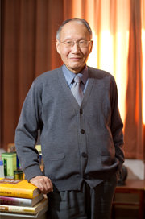

- 作者简历：
- 沈丕安，男，1937年12月生。上海中医学院1962年毕业。1962年起在上海市中医医院工作至今。曾担任肿瘤科主任、内科主任、风湿科主任。主任医师、教授，上海市名中医，上海市名中医研究工作室导师。 现任上海中医药大学附属市中医医院免疫病研究所名誉所长，上海市红斑狼疮医疗中心主任，上海市免疫病中医会诊中心主任。 兼任世界中医药联合会风湿病专业委员会副主任委员，上海市中医风湿病学会名誉主任委员，上海药膳协会会长。 在研究红斑狼疮、类风湿关节炎、高脂血症、脂肪肝等中医治疗方面，曾完成养阴清热法治疗红斑狼疮、复方地黄颗粒治疗红斑狼疮、羌活地黄汤治疗类风湿关节炎、风湿病辨证论治系列方药的临床及开发研究，降脂剂、舒肝祛脂胶囊等局级、市级、部级课题多项，曾获部级成果一等奖、二等奖、三等奖、荣誉奖各一项，著作二等奖、三等奖各一项，国家专利四项。宁红减肥茶九十年代初曾获国家科委新产品金奖，为国内减肥茶的首创人。 主编与个人编著的著作有《红斑狼疮中医临床研究》、《现代中医免疫病学》、《中药药理与临床运用》、《中药不良反应与临床》、《实用中医风湿病学》（第二版）、《虚弱的药补与食补》、《补益中药的临床运用》、《家庭常用人参事典》、《跟名医做临床》内科难病二、《风湿病中医诊治手册》、《五高五低与健康长寿》共11部；以及参编的著作有10多部。曾发表论文等80多篇。 主编的《自主免疫病风湿病中医治疗》英文版已由伦敦Donica Publishing于2012年2月在英国出版。 荣获国务院特殊津贴；1999年访美会诊讲学，荣获旧金山市政府颁发的由市长威利•布朗签署的荣誉市民奖状。2011年兼任奥地利Diakonissen医院顾问。